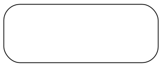

关于 我们是谁？我们做什么？
我们想通过讨论、积累来提高英语阅读能力。每周二、四、六的6:30左右在soul开房间交流。
功能提示：
- 通过导航栏跳转至当日句子页面；
- 第一次打开网页图片缓存较慢，请耐心等待（无法查看者可找心灵私聊要图片）；
- 充分利用隐藏解析功能，先规定5min自己看句子、再打开解析比对；
- 利用每页下方记录库记录疑难点，关闭网页记录不会消失；
- 带着疑惑到soul房间由分享人进行解疑，并一起讨论；
- 如果想查找某个特定单词/分享者/句子：电脑端按Crtl+F、手机端用浏览器自带的“页面查找”功能。
- 欢迎把你日常做题遇到的难点po出来一起讨论解决！
感谢每一个参与者，尤其是分享者！目前已发布7.28——8.4日的长难句。

7.28日长难句
预习+解析
-
@xixi：Owing to the remarkable development in mass communications, people everywhere are feeling new wants and are being exposed to new customs and ideas , while governments are often forced to introduce still further innovations for the reasons given above.
解析:
1.owingto引导一个原因状语
2.people是主句主语，后面两个并列谓语
3.第一个谓语是are feeling new wants,第二个谓语是are being exposed to new customs and ideas
4.while引导了一个状语从句翻译:大众通信的显著发展使各地的人们不 断感到有新的需求，不断接触到新的习俗和 思想，然而由于上述原因，政府常常得推出 更多的革新措施。
@心灵:Unhappy parents rarely are provoked to wonder if they shouldn't had kids，but unhappy childless folks are bothered with the message that children are the single most important thing in the world： obviously their misery must be a direct result of the gaping baby-size holes in their lives. （2011,Reading Comprehension, part A text4)
难点提示：含有同位语从句、多个句子可以通过连接词和标点断开

@少年:Yet increasing evidence suggests that human prejudices have been baked into these tools because the machine-learning models are trained on biased data. Far from avoiding racism, they may simply be better at hiding it. Many critics now view these tools as a form of tech-washing, where an appearance of objectivity covers mechanisms that perpetuate inequities in society.
思考题：
What is the author’s attitude towards these tools?
(A) biased (B) skeptical (C) objective (D) tolerance
词汇提示：
1.increasing evidence 越来越多的证据 2.human prejudices 人类的偏见 3.the machine-learning models机器学习的模式 4.biased 歧视性的 5.Far from：远没有 6. simply干脆 7.tech-washing 技术性洗白 8. mechanisms 机制 9.perpetuate 使…持续 10.inequities 不平等
文章背景:Predictive policing algorithms are racist. They need to be dismantled.预测性警用算法是种族主义的。它们需要被解除。
翻译：根据历史经验和现时环境预测未来的能力历来是人类智能的桂冠。在古老的原始部落，人们就尊崇这方面能力出众的巫师们，给予他们极高的社会地位。而现在，我们期待机器学习和人工智能掀起一场新的革命,从大数据中读取解锁未来的钥匙。然而，最早借助这些预测技术的美国警察们却发现，旨在帮助他们超越个人偏见的算法，却因为训练数据的“原罪”而天然地带有系统性歧视。本这些算法不仅没有维持中立和客观，还以技术的外衣洗白了种族歧视。就像电脑普及后，我们可以大大方方地把自己的错误归结为电脑故障，歧视也得以“无辜脸”地隐身于算法之中。
第一句: Yet increasing evidence suggests that// human prejudices have been baked into these tools because the ma chine-learning models are trained on biased data. 参考译文:然而，越来越多的证据表明，这些工具中已经植入了人们的偏见，因为机器学习模型是由歧视性的数据训练的。
第二句: Far from avoiding racism, // they may simply be better at hiding it. 参考译文:它们远未避免种族主义，可能只是更擅长隐藏种族主义。
第三句: Many critics now view these tools as a form of tech-washing, where veneer of objectivity covers mechanisms that perpetuate inequities in society. 参考译文:现在，许多批评 家将这些工具视为一种技术 洗白，用表面的客观来掩盖 延续社会不平等的机制。 思考题解析: What is the author's attitude towards these . tools? (A) biased (B) skeptical (C) objective (D) tolerance 从第二句中可以知道答案为 B!@Jennifer:To filter out{ what is unique from (what is shared )}might enable us to understand(how complex cultural behavior arose and what guides it in revolutionary or cognitive terms.)
tip:划分句子成分
@鼠标：For the women of my generation who were urged to keep juggling through the 80’s, down-shifting in the mid 90s is not so much a search for the mythical good life--growing your own organic vegetables, and risking turning into a simpler, less materialistic lifestyle --as a personal recognition of your limitations.
对于我这一代曾在整个80年代为生活奔波的女人来说，90年代中期出现的归隐恬退与其说 是我们寻求一种神话般的美好生活(用有机肥种植蔬菜,并且冒险去过一种更加简单和更少 物质的生活方式)不如说是我们清醒地认识到自身能力是有限的。
搭配: not so (as) much...as...比较结构，通常理解为:与其说...不如说...
例如: He was not so much angry as disappointed.他与其说愤怒不如说失望。-
@⭐：The newly described languages were often so strikingly differentfrom the well studied languages of Europe and Southeast Asia thatsome scholars even accused Boas and Sapir of fabricating theirdata.
解析
【核心词汇】strikingly意为“显著地”accuse意为“指责：指控”却考研fabricate的意思是“捏造”
【结构分析】
1.本题考核的知识点是：that结构、短语accuse sb.ofsth.、过去分词做定语的译法。
2.句子的主干是languages were often so.that...，其中that引导结构状语从句。有两个过去分词作定语：newly described和well studied，因为较短，可直接译为定语。主句谓语部分wereoften so strikingly different from有两种处理方法：一种是保留原文词性，译为“如此显著地不同于”；第二种是改变词性，将different变为名词，strikingly变为形容词，全句结构为“......和……的区别如此显著，以至于.…”。后者更加符合汉语的习惯。
【翻译】
新近被描绘的语言与过去已经得到充分研究的欧洲及东南亚语言之间的区别如此显著，以至于一些学者甚至指责博厄斯和萨皮尔捏造数据。
7.30日长难句 预习+解析
@PANPAN
They found that after a surprise departure,the probability that the company will subsequently have to restate earnings increases by nearly 20%. The likelihood of being named in a federal class-action lawsuit also increases,and the stock is likely to perform worse.
思考题：According to the message，after an outside director’s surprise departure，the firm is likely to ___.
A. become more stable
B. report increased earnings
C. do less well in the stock market
D. perform worse in lawsuits
@鼠标
While warnings are often appropriate and necessary--the dangers of drug interactions, for example--and many are required by state or federal regulations, it isn’t clear that they actually protect the manufacturers and sellers from liability if a customer is injured.
@少年
European Union leaders on Tuesday provided a vital lifeline for the Mediterranean countries that have sometimes felt abandoned by Brussels amid the coronavirus pandemic, reaching a deal to pump money into their hard-hit economies. Though the rescue package was celebrated by nearly all the leaders after four days of tense negotiations, the reaction was perhaps most notable in Europe‘s south — particularly in Italy.
思考题： It can be inferred from the text that__.
A. Brussels has threatened to abandon Mediterranean countries
B. the rescue package was only well-received among Europe’s south
C. Italy maybe one of the hard-hit economies in the European Union
D. Italian politicians maybe widely known as being short-sighted
词汇突破：
- Brussels= European Union与Washington= American government 是一个道理
- the Mediterranean countries 地中海国家
- hard-hit economies 饱受打击的经济
- rescue package（一揽子拯救计划）就是前文的 a deal 计划
- lifeline 生命线
- tense 激烈的
- notable 显著的
参考译文：
欧盟领导人周二为曾不时感到在冠状病毒大流行中被布鲁塞尔抛弃的地中海国家提供了至关重要的生命线，达成了向欧盟受冲击最大的经济体注入资金的协议。
尽管经过四天的紧张谈判，几乎所有领导人都对救援方案表示赞许，但反应最为显著的可能是欧洲南部——特别是意大利.
A. （布鲁塞尔曾威胁抛弃地中海国家）
A选项错误。
B. （援救计划只在欧洲南部受欢迎）
B选项错误。
C. （意大利是欧盟中受打击最在的经济体之一）
C选项正确。
D. （意大利政客可能被广泛认为短视）
D选项错误。
@Jennifer
One of the astonishing revelations was {how little Rebekah Brooks knew of what went on her newsroom, how little she thought to ask and the fact that (she never inquired /how the stories arrived/.)}(2015 Reading comprehension part A text 4)
@心灵
In all, the study concludes that whereas prosecutors should only evaluate a case based on its merits，They do seem to be influenced by a company's record in CSR.
“We estimate that either eliminating a substantial labor-rights concern，such as child labor，or increasing corporate giving by about 20% results in fines that generally are 40% lower than the typical punishment for bribing foreign officials.”says one Researcher.
8.1日长难句 预习+解析
@Jennifer
The Federal Circuit issued an unusual order stating that {the case would be heard by all 12 of the court's judges, rather than a typical panel of three}, and that one issue｛（that） it ［order］wants to evaluate ［the issue］}is {whether it should “reconsider” its State Street Bank ruling.}
翻译：联邦巡回法院发布了一项不寻常的法令，声明这个案件将由法院全部的12名法官共同听审，而不是典型的三人听审团，法令还宣布法院希望评估是否要“重新考虑”道富银行案的裁决。
解析图片：
@心灵
“So few authors have brains enough or literary gift enough to keep their own end up in journalism，” Newman wrote，“ that I am tempted to define 'journalism' as 'a term of contempt applied by writers who are not read to writers who are.”
解析图片：
@PANPAN
Economic condition was only a stimulus for the trend toward efficient living.
The phrase"less is more"was actually first popularized by a German,the architect Ludwig Mies van der Rohe,who like other people associated with the Bauhaus,a school of design,emigrated to the United States before World War II and took up posts at American architecture schools.
These designers came to exert enormous influence on the course of American architecture,but none more so than Mies.
思考题：Which of the following can be inferred from Paragraph 3 about the Bauhaus?
A. It was founded by Ludwig Mies van der Rohe.
B. Its designing concept was affected by World War 2
C. Most American architects used to be associated with it.
D. It had a great influence upon American architecture.
翻译图片：
解析图片：
@少年
Supporters of the new super systems argue that these mergers will allow for substantial cost reductions and better coordinated service. Any threat of monopoly, they argue, is removed by fierce competition from trucks. But many shippers complain that for heavy bulk commodities traveling long distances, such as coal, chemicals, and grain, trucking is too costly and the railroads therefore have them by the throat.
思考题：According to those who support mergers, railway monopoly is unlikely because ____.
[A] cost reduction is based on competition
[B] services call for cross-trade coordination
[C] outside competitors will continue to exist
[D] shippers will have the railway by the throat
词汇提示
have somebody by the thoat : 卡住某人的脖子
allow for 带来
cross-trade coordination 跨行业的协调
substantial 相当大的
翻译：新的超级系统的支持者认为这些合并将会带来（allow for）大幅的费用降低和更好的协调服务。他们认为任何由垄断所带来的威胁都被来自卡车的竞争给消除了。但是很多货主却抱怨道对于需要长途运输的大宗商品，比如煤炭，化学品和粮食；有卡车运输就太贵了。这样一来铁路就卡住了他们的脖子。（这里是个比喻，表示这些货主受制于铁路行业）
解析：那些支持合并的人认为，铁路行业的垄断是不可能的，因为__.
精确定位只能到第二句！第一句虽然也是支持合并的人的观点，但是没有谈到垄断啊！所以
[A]
（费用的降低是基于竞争的）
[B]
（服务需要跨行业的协调）
A和B我真的不会选！
对D选项我更是要呵呵了！
[D] （货主将会卡住铁路的脖子）
且不说谁卡谁的脖子，定位就错了啊！
问的是支持者的观点，第三句是货主的观点！
我肯定不会选！
但是我也知道大家在考场上还做不到第一步就能排除ABD，
那我就只希望你们在最后选择的时候问一问自己：我有没有精确定位！我有没有尊重题干！
[C]
直接对应第二句：competition from trucks= outside competitors
来积累个替换句吧：
原文：Any threat of monopoly, they argue, is removed by fierce competition from trucks.
选项：According to those who support mergers, railway monopoly is unlikely because outside competitors will continue to exist.
@不二
While at least eight states, including New York, have rescheduled the exams for the fall, a movement is being planned to allow 2020 grads to begin practicing law without having been admitted to the bar.
An April 1 letter signed by the deans of the 15 law schools in New York warned that a delay in admission to the bar could cause students “profound harm in a time already marked by suffering, intensifying financial hardship and exacerbating the unfairness of their plight.”
思考题：
It can be inferred from the text that _____.
A. a movement prepares to make an exception in the bar
B.the bar was cancelled due to a letter and warn by deans
C.law students can practice law without admission to the bar
D.the cost of legal education is high due to the unfairness
词汇突破：
rescheduled 重新计划
the fall 秋天
grads 毕业生
practicing law 开始律师执业
the bar=the bar exam 律师资格考试
admitted to the bar 通过律师资格考试
intensifying 加剧
exacerbating 加剧
plight 困境
句子解析：
第一句：
While at least eight states, including New York, have rescheduled the exams for the fall, （状语）a movementis being planned （主干）to allow 2020 grads to begin practicing law（定语） without having been admitted to the bar(状语）.
参考译文：虽然包括纽约在内的至少八个州已经重新将考试安排在秋季，但一项运动正在进行中，致力于允许2020届毕业生在未取得律师资格的情况下开始执业。
第二句：
An April 1 letter signed by the deans of the 15 law schools in New York(定语） warned that主干 //a delay in admission to the bar could cause students “profound harm宾语从句 in a time （宾语从句的状语）already marked by suffering, intensifying financial hardship and exacerbating the unfairness of their plight.(定语）”
切分：
主干：An April 1 letter warned that +宾语从句
信的定语：signed by the deans of the 15 law schools in New York
宾语从句：a delay in admission to the bar could cause students “profound harm
状语：in a time
定语：already marked by suffering, intensifying financial hardship and exacerbating the unfairness of their plight.
参考译文：纽约15所法学院的院长在一封日期为4月1日的信中警告道，推迟律师资格获取将会给学生带来深切的伤害，这个时刻本就痛苦，经济困境正在加剧，他们的苦难愈加不公。
思考题解析：
A. a movement prepares to make an exception in the bar
一项运动准备在律师资格考试这件事上破例。
对的！就是第一句说的内容！
是不是非常的模糊啊！
B.the bar was cancelled due to a letter and warn by deans
因为主任们的信和警告，律师资格考试被取消了。
不对，这是把一二句的内容胡乱的拼凑在一起的！
拼多多！
C.law students can practice law without admission to the bar
不通过律师资格考试，法学生也可以执业！
不对！即使有破例也只是准备破例！
D.the cost of legal education is high due to the unfairness
因为不公平，所以法学教育成本很高！
不对！没有说！
8.4日周二长难句 预习+解析
@xixi
The cases the court overturned said that if a business was shipping a customer's purchase to a state where the business didn't have physical presence such as a warehouse or office, the business didn't have to collect sales tax for the state. 提示：嵌套结构
@鼠标
All would be well were reason the only judge in the creationism and evolution debate.
【翻译】如果理性是创造论和进化论的争论中的唯一评判标准的话，那么所有的事情就很好办了。
【解析】助动词were被提前置于主语reason前，可以判定为部分倒装；此处倒装的原因是由于虚拟条件句中if被省略而引起的，句子还原就是：If reason were the only judge in the creationism and evolution debate, all would be well .
附加句（讲解）：The tests can not tell how able an underprivileged youngster might have been had he grown up under more favorable circumstances. 例如，测试并不能说明一个物质条件很差的人，如果在更加有利的条件下成长，会有多么能干。
@少年、不二
In the US, mandatory custodial sentences have long been a feature of the sentencing of children, even in some cases leading to the imprisonment of those under 18 for the rest of their natural lives.
In England, we have been steadily moving in the same direction, as politicians respond – slavishly and without reason – to each round of media coverage of a youth “crimewave”.
【思考题】The politicians of England react to the so-called youth “crimewave” by
(A) deploying the same direction of media coverage. （B）imposing severe punishment on children crime. （C）ruling the life sentence for those under the 18. （D）moving the same way with the media and press.
【参考译文】在美国，儿童犯罪的判刑长期以来以强制监禁为特色，甚至在某些情况下，会导致18岁以下的孩子面临终身监禁。在英国，随着政客们——盲目地、毫无根据地回应每一轮关于青少年“犯罪潮”的报道，我们一直在朝同一方向稳步行进。
【解析】 The politicians of England react to the so-called youth “crimewave” by (英国政客是如何对青少年犯罪浪潮作出回应的)
(A) 使用和媒体报道一样的方向。（这个不对！） （B）对儿童犯罪实施严厉的惩罚。对！ 因为说到了我们是朝着同一个方向稳步前进的。什么叫同一个方向？就是指和美国一样的方向。那就是像美国那样对青少年犯罪判重刑。 对了你可能会说，青少年犯罪可以：children crime 吗？可以！还可以用：juvenile Deliquency 估计我用这个你更懵了。 （C）判那些18岁以下的人终生监禁。也不能都判终生监禁啊。所以B才是最佳啊！ （D）和媒体往同一个方向。这里不对，不是和媒体，而是和美国。
@⭐
"Intellect is resented as a form of power or privilege,"writeshistorian and professor Richard Hofstadter in Anti-intellectualism inAmerican Life,a Pulitzer-Prize winning book on the roots ofanti-intellectualism in US politics,religion,and education. 【核心词汇】privilege n.特权v.给与...的特权，特免
【结构分析】句子主干为一个直接引语，“Intellect is resented as a form of poweror privilege," writes historian and professor Richard Hofstadter.后面连接的in Anti-intellectualism in American Life作状语，斜体部分为书名，Pulitzer-Prize winning book为同位语，on表示“以....…为主题”。
【参考译文】“才智被看作一种权利和特权而遭到厌弃，”历史学家理查德·霍夫斯坦特教授在《美国生活中的反才智主义》中这样写道。这本曾获普利策奖的书探讨了美国政治、宗教和教育领域中反才智主义的根源。文档矫正
@Jennifer
Whorf came to believe in a sort of linguistic determinism {which, (in its strongest form), states/that language imprisons the mind /,/and that a dramatic patterns in a language can produce far-reaching consequences for the culture of a society/ (2004 考研 Reading comprehension part B）
解析翻译图片：
@心灵
Because they are adjusting to their new bodies and a whole host of new intellectual and emotional challenges,teenager are especially self conscious and need the confidence that comes from achieving success and knowing that their accomplishments are admired by others.
翻译图片：
解析图片：
8.6日周四长难句 预习+解析
@⭐
"Intellect is resented as a form of power or privilege,"writeshistorian and professor Richard Hofstadter in Anti-intellectualism inAmerican Life,a Pulitzer-Prize winning book on the roots ofanti-intellectualism in US politics,religion,and education. 【核心词汇】privilege n.特权v.给与...的特权，特免
【结构分析】句子主干为一个直接引语，“Intellect is resented as a form of poweror privilege," writes historian and professor Richard Hofstadter.后面连接的in Anti-intellectualism in American Life作状语，斜体部分为书名，Pulitzer-Prize winning book为同位语，on表示“以....…为主题”。
【参考译文】“才智被看作一种权利和特权而遭到厌弃，”历史学家理查德·霍夫斯坦特教授在《美国生活中的反才智主义》中这样写道。这本曾获普利策奖的书探讨了美国政治、宗教和教育领域中反才智主义的根源。文档矫正
@Jennifer
They found that {the principal requirement for (what is called “global cascades”)—— the widespread propagation of influence through networks——is the presence not of a few influentials but，rather，of a critical mass of easily influenced people.}
提示：主干:他们发现最主要的需求存在。
解析翻译图片：
解析翻译图片：
@PANPAN
At the same time,the American Law Institute——a group of judges,lawyers,and academics whose recommendations carry substantial weight——issued new guidelines for tort law stating that companies need not warn customers of obvious dangers or bombard them with a lengthy list of possible ones.
解析翻译图片：
解析翻译图片：
@鼠标
In Britain and Japan, inflation is running half a percentage point below the rate predicted at the end of last year. This is no flash in the pan. Over the past couple of years, inflation has been consistently lower than expected in Britain and America.
The sentence "This is no flash in the pan" means that ____.
[A] the low inflation rate will last for some time
[B] the inflation rate will soon rise
[C] the inflation will disappear quickly
[D] there is no inflation at present
翻译：去年年底，英国和日本的通货膨胀率实际上比预测的要低半个百分点。这不是昙花一现。在过去几年里，英国和美国的通货膨胀 率始终低于预测水平。
@xixi
But if your work is your"passion, "you'll be more likely to devote yourself to it, even if that means going home for dinner and then working long after the kids are in bed.
@心灵
请将下列句子的主动和被动语态写出来：
- 我们应该减少私家车（private car）的使用。
- 我建议你们结交更多的中国朋友以快速、真正地了解中国文化。
8.7日周五真题
做起来
2011 Text 3
- The rough guide to marketing success used to be that you got what you paid for. No longer. While traditional “paid” media – such as television commercials and print advertisements – still play a major role, companies today can exploit many alternative forms of media. Consumers passionate about a product may create “owned” media by sending e-mail alerts about products and sales to customers registered with its Web site. In fact, the way consumers now approach the process of making purchase decisions means that marketing's impact stems from a broad range of factors beyond conventional paid media.
- Paid and owned media are controlled by marketers promoting their own products. For earned media , such marketers act as the initiator for users’ responses. But in some cases, one marketer’s owned media become another marketer’s paid media – for instance, when an e-commerce retailer sells ad space on its Web site. We define such sold media as owned media whose traffic is so strong that other organizations place their content or e-commerce engines within that environment. This trend ,which we believe is still in its infancy, effectively began with retailers and travel providers such as airlinesand hotels and will no doubt go further. Johnson & Johnson, for example, has created BabyCenter, a stand-alone media property that promotes complementary and even competitive products. Besides generating income, the presence of other marketers makes the site seem objective, gives companies opportunities to learn valuable information about the appeal of other companies’ marketing, and may help expand user traffic for all companies concerned.
- The same dramatic technological changes that have provided marketers with more (and more diverse) communications choices have also increased the risk that passionate consumers will voice their opinions in quicker, more visible, and much more damaging ways. Such hijacked media are the opposite of earned media: an asset or campaign becomes hostage to consumers, other stakeholders, or activists who make negative allegations about a brand or product. Members of social networks, for instance, are learning that they can hijack media to apply pressure on the businesses that originally created them.
- If that happens, passionate consumers would try to persuade others to boycott products, putting the reputation of the target company at risk. In such a case, the company’s response may not be sufficiently quick or thoughtful, and the learning curve has been steep. Toyota Motor, for example, alleviated some of the damage from its recall crisis earlier this year with a relatively quick and well-orchestrated social-media response campaign, which included efforts to engage with consumers directly on sites such as Twitter and the social-news site Digg.
31.Consumers may create “earned” media when they are
[A] obscssed with online shopping at certain Web sites.
[B] inspired by product-promoting e-mails sent to them.
[C] eager to help their friends promote quality products.
[D] enthusiastic about recommending their favorite products.
32.According to Paragraph 2,sold media feature
[A] a safe business environment.
[B] random competition.
[C] strong user traffic.
[D] flexibility in organization.
33.The author indicates in Paragraph 3 that earned media
[A] invite constant conflicts with passionate consumers.
[B] can be used to produce negative effects in marketing.
[C] may be responsible for fiercer competition.
[D] deserve all the negative comments about them.
34.Toyota Motor’s experience is cited as an example of
[A] responding effectively to hijacked media.
[B] persuading customers into boycotting products.
[C] cooperating with supportive consumers.
[D] taking advantage of hijacked media.
35.Which of the following is the text mainly about ?
[A] Alternatives to conventional paid media.
[B] Conflict between hijacked and earned media.
[C] Dominance of hijacked media.
[D] Popularity of owned media.
选择题答案：DCBAA
逻辑图片：